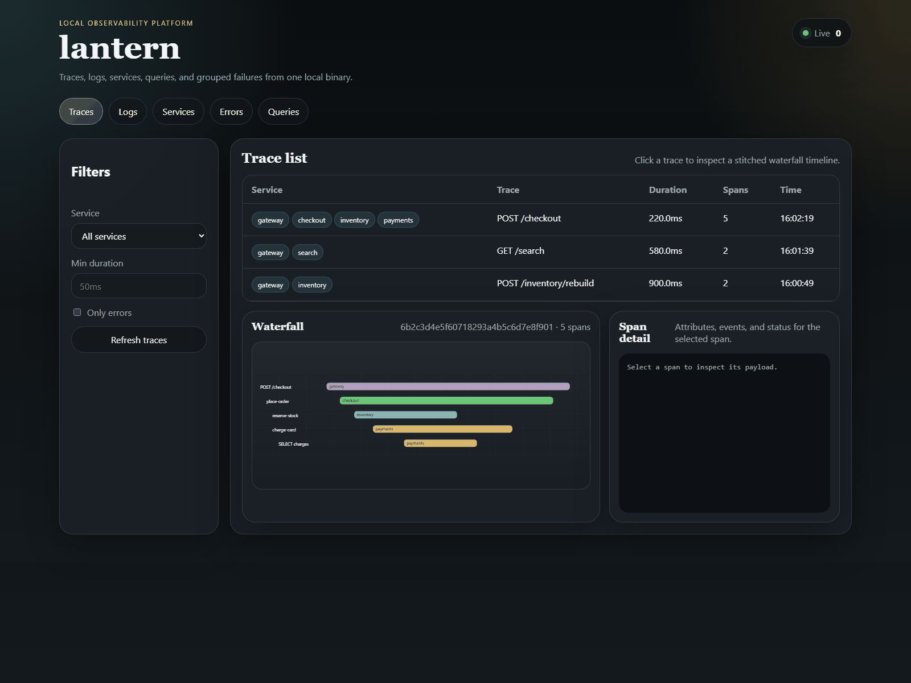
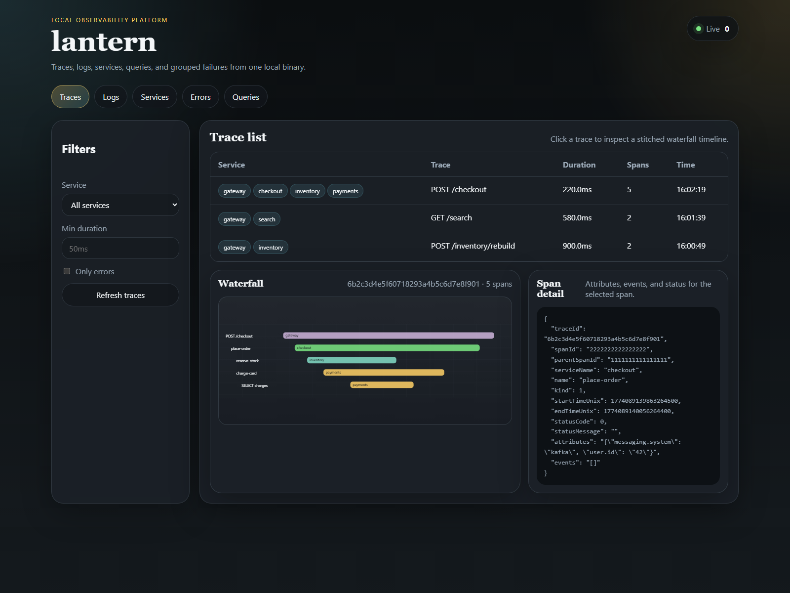
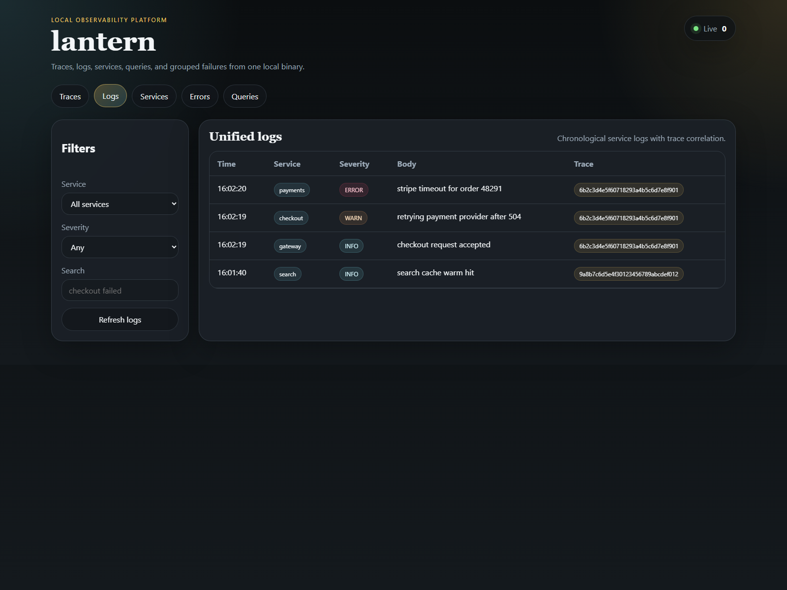
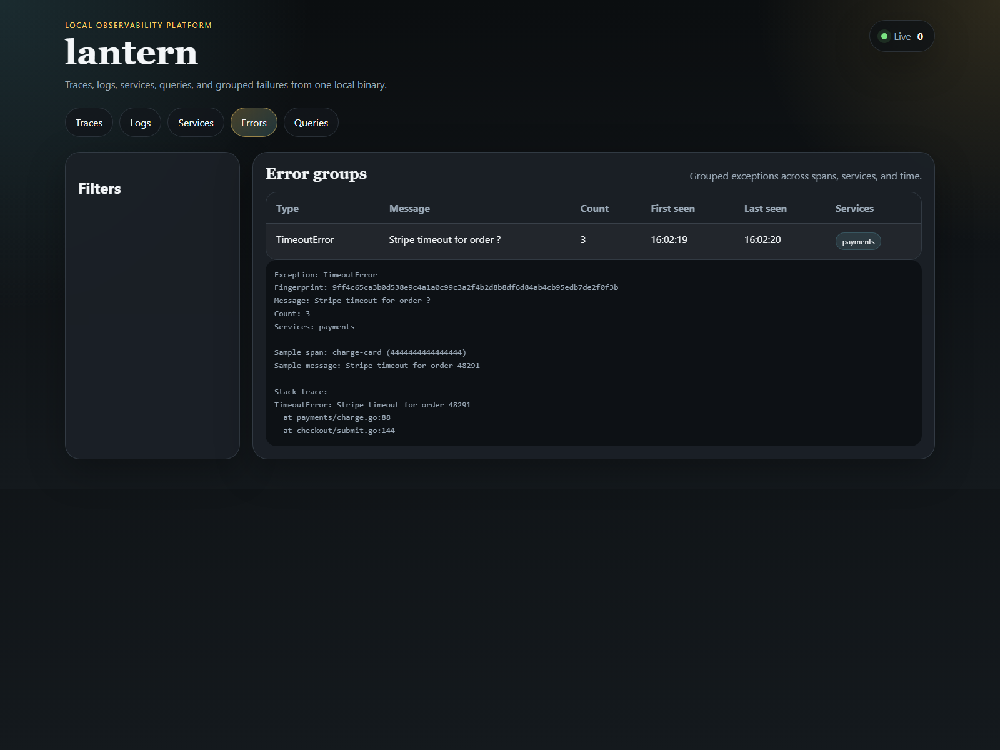

Standard local ports
Keep your OTEL exporter pointed at localhost:4317 and start
debugging instead of translating every example into a custom local stack.
Local observability without the local stack
Lantern accepts OTLP on the standard local ports, stores traces and logs in SQLite, and gives you both a browser UI and terminal UI for inspection. No Jaeger plus Loki plus Grafana setup. No separate hosted dependency.

Why Lantern
Jaeger gives you traces. Loki gives you logs. Grafana expects everything around it. Lantern is for the moment when that stack is too heavy for a laptop debugging loop and you just want your OpenTelemetry exporter pointed at localhost.
Keep your OTEL exporter pointed at localhost:4317 and start
debugging instead of translating every example into a custom local stack.
Lantern is useful because it keeps trace waterfalls, grouped errors, and log streams in one local surface instead of splitting context across apps.
Persist local runs long enough to compare behavior without needing a remote collector or a managed observability account.
Use the browser when you want a richer inspection surface, and keep the terminal UI nearby for keyboard-first debugging.
Product tour
The page below leans on real UI captures already in the repo so the product proof matches what Lantern actually ships today.

Inspect spans and request timing without leaving your local environment.

Keep logs close to traces so debugging does not become a context switch.

Cluster repeated failures into something you can triage quickly.
Install
Lantern is intentionally simple to start because the biggest friction in observability tooling is setup cost before the first useful signal appears.
go install github.com/Meru143/lantern/cmd/lantern@latest
lantern serve --no-tui
export OTEL_EXPORTER_OTLP_ENDPOINT=http://localhost:4317
export OTEL_EXPORTER_OTLP_PROTOCOL=grpc
./your-appOpen http://localhost:4000
Inspect:
- traces
- logs
- services
- queries
- grouped errors